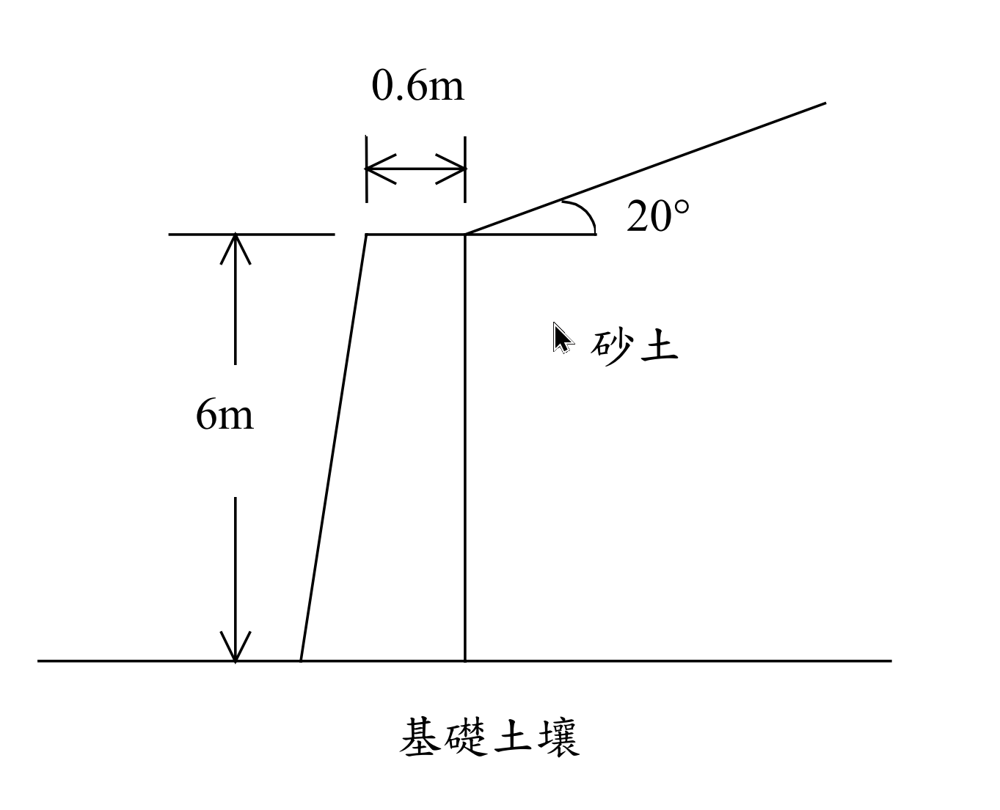

考題編號：SM-2009-4
主分類： SM-U3 擋土結構與邊坡工程
副分類： SM-U3-2 擋土結構物穩定分析
分析法： 有效應力法
標籤： 重力式擋土牆 Rankine土壓力 抗傾覆分析 抗滑動分析
1. 原始題目重述 (Problem Restatement)
茲設計一重力式混凝土擋土牆高 6 m，牆頂寬度為 0.6 m，其背填土為砂土，與水平成 20°。背填土之單位重為 18 kN/m³，摩擦角為 30°；混凝土之單位重為 24 kN/m³；而牆底之基礎土壤單位重為 16 kN/m³，摩擦角為 33°。（25 分）
(一)若欲使所有作用力之合力通過牆底，且距牆趾為三分之一牆底寬度時，則牆底寬度須為多少？
(二)根據以上所得的結果，試分別檢核此擋土牆抵抗水平滑動及傾倒之安全係數。若安全係數不足時，在不改變牆底寬度的情況下，有何改善的方式？

圖說：擋土牆高 6 m，頂寬 0.6 m，牆背垂直，牆前傾斜。背填土傾角 $\alpha=20^\circ$，屬砂土 ($\gamma = 18 \text{ kN/m}^3, \phi = 30^\circ$)。基礎土壤 $\gamma = 16 \text{ kN/m}^3, \phi = 33^\circ$。
2. 考題核心精神與出題者意圖 (Core Concepts & Examiner's Intent)
本題測驗工程師對於擋土牆整體穩定性分析的完整掌握能力，核心考點包括：
- 傾斜背填土之主動土壓力：須熟悉 Rankine 理論中當背填土傾斜時，土壓力係數 $K_a$ 的計算，且其作用方向應平行於背填土地表面（即與水平面夾 $\alpha$ 角），因此會產生水平與垂直兩個分力。
- 合力偏心距與底寬之關係：考驗對於「合力通過底寬 1/3 處」此一邊界條件的力學意義（即偏心距 $e = B/6$，基礎底面恰好不產生張力），並能將其轉化為力矩與垂直力的代數方程式以反求底寬 $B$。
- 穩定性檢核與工程對策：要求計算抗滑動（$FS_{SL}$）與抗傾覆（$FS_{OT}$）安全係數，並在評估其不足時，提出實務上在「不改變底寬」限制條件下的有效改善方案。
3. 解題戰略地圖與陷阱分析 (Strategic Roadmap & Trap Analysis)
解題策略：
- 計算主動土壓力：利用傾斜背填土的 Rankine 公式計算 $K_a$，求出總主動土壓力 $P_a$，並將其分解為水平分力 $P_{ah}$ 與垂直分力 $P_{av}$。
- 建立力矩平衡方程式：將擋土牆斷面拆分為矩形（後側）與三角形（前側），以底寬 $B$ 為未知數，列出牆身自重 $W$ 及其對牆趾之抗傾覆力矩。
- 求解底寬 $B$：依據題目條件「合力距牆趾為 $B/3$」，利用 $x = (\sum M_R - \sum M_O) / \sum V = B/3$ 的關係式，解一元二次方程式求出 $B$。
- 檢核安全係數：代入 $B$ 值，計算 $FS_{OT} = \sum M_R / \sum M_O$ 與 $FS_{SL} = \sum F_R / \sum F_D$（假設底面摩擦角 $\delta = \phi_f = 33^\circ$）。
- 提出改善對策：針對不足的安全係數，提出增設抗滑榫、加深埋置深度或改變背填土等不改變牆寬的方案。
陷阱分析：
- ⚠ 陷阱 1：忽略主動土壓力的垂直分力。當背填土傾斜時，Rankine 主動土壓力的方向會平行於地表面，因此 $P_a$ 具有垂直向下之分力 $P_{av}$。此分力會增加牆底總垂直力，並提供額外的抗傾覆力矩，若忽略將導致方程式完全錯誤。
- ⚠ 陷阱 2：牆身形心力臂計算錯誤。牆體前傾後直，計算自重力矩時需正確將牆底座標設定為 $0 \sim B$，並注意三角形重心距離底角的正確位置（距底角 2/3 底寬）。
- ⚠ 陷阱 3：摩擦角與底面摩擦力。牆底基礎為混凝土與土壤接觸，其實際摩擦角 $\delta$ 通常為 $(2/3 \sim 1.0)\phi_f$。本題未明示，保守或一般取 $\delta = \phi_f$ 計算，需清楚標示假設。
3.5 變數層次分析 (Variable Hierarchy Analysis)
最終目標
反求滿足合力偏心距條件之牆底寬度 B，並檢核其抗滑動與抗傾覆安全係數，提出改善方案。
本題關鍵公式（依計算順序）
- 傾斜背填土主動土壓力係數：$K_a = \cos \alpha \frac{\cos \alpha - \sqrt{\cos^2 \alpha - \cos^2 \phi}}{\cos \alpha + \sqrt{\cos^2 \alpha - \cos^2 \phi}}$
- 總主動土壓力：$P_a = \frac{1}{2} \boxed{K_a} \gamma H^2$
- 作用力合力位置：$x = \frac{\sum M_R - \sum M_O}{\sum V} = \frac{B}{3}$
- 抗傾覆安全係數：$FS_{OT} = \frac{\sum M_R}{\sum M_O}$
- 抗滑動安全係數：$FS_{SL} = \frac{\sum V \tan \delta + c_b B}{P_{ah}}$
L1：題目直接給定
| 符號 | 數值 | 說明 |
|---|---|---|
| $H$ | $6 \text{ m}$ | 擋土牆總高度 |
| $B_{top}$ | $0.6 \text{ m}$ | 擋土牆頂寬 |
| $\alpha$ | $20^\circ$ | 背填土傾角 |
| $\gamma$ | $18 \text{ kN/m}^3$ | 背填土單位重 |
| $\phi$ | $30^\circ$ | 背填土摩擦角 |
| $\gamma_c$ | $24 \text{ kN/m}^3$ | 混凝土單位重 |
| $\gamma_f$ | $16 \text{ kN/m}^3$ | 基礎土壤單位重 |
| $\phi_f$ | $33^\circ$ | 基礎土壤摩擦角 |
L2：需知識點推導
主動土壓力計算
| 符號 | 公式／來源 | 卡關? |
|-----|-----------|------|
| $K_a$ | Rankine 公式 (考慮 $\alpha$) | |
| $P_a$ | $\frac{1}{2} K_a \gamma H^2$ | |
| $P_{ah}$ | $P_a \cos \alpha$ | |
| $P_{av}$ | $P_a \sin \alpha$ | |
力矩與安全係數
| 符號 | 公式／來源 | 卡關? |
|-----|-----------|------|
| $\sum V$ | $W_1 + W_2 + P_{av}$ | |
| $\sum M_R$ | $M_{W1} + M_{W2} + M_{Pav}$ | |
| $\sum M_O$ | $P_{ah} \times (H/3)$ | |
| $x$ | $(\sum M_R - \sum M_O) / \sum V$ | |
| $FS_{OT}$ | $\sum M_R / \sum M_O$ | |
| $FS_{SL}$ | $(\sum V \tan \phi_f) / P_{ah}$ | |
L3：深層知識（不懂就卡住）
| 知識點 | 說明 | 卡關? |
|---|---|---|
| 傾斜填土的土壓力方向 | Rankine 理論中，傾斜填土之主動土壓力作用方向必平行於填土地表面 | |
| 牆趾力矩平衡法 | 所有力矩計算基準點皆取於牆趾（Toe, 最前端點） | |
| 偏心距與合力位置 | 題目「距牆趾 1/3 牆寬」即 $x = B/3$（此時偏心距 $e = B/6$，恰好無張力） |
4. 步驟化詳細計算過程 (Step-by-Step Detailed Calculation)
(一) 求牆底寬度 $B$
Step 1：計算主動土壓力及其分力
背填土傾角 $\alpha = 20^\circ$，摩擦角 $\phi = 30^\circ$。
利用 Rankine 傾斜背填土之主動土壓力係數公式：
$$
K_a = \cos \alpha \frac{\cos \alpha - \sqrt{\cos^2 \alpha - \cos^2 \phi}}{\cos \alpha + \sqrt{\cos^2 \alpha - \cos^2 \phi}}
$$
代入數值：
$$
\cos 20^\circ = 0.9397 \quad ; \quad \cos 30^\circ = 0.8660
$$
$$
\sqrt{\cos^2 20^\circ - \cos^2 30^\circ} = \sqrt{0.9397^2 - 0.8660^2} = \sqrt{0.8830 - 0.7500} = \sqrt{0.1330} = 0.3647
$$
$$
K_a = 0.9397 \times \frac{0.9397 - 0.3647}{0.9397 + 0.3647} = 0.9397 \times \frac{0.5750}{1.3044} = 0.4142
$$
總主動土壓力（作用於距牆底 $H/3 = 2 \text{ m}$ 處）：
$$
P_a = \frac{1}{2} K_a \gamma H^2 = \frac{1}{2} \times 0.4142 \times 18 \times 6^2 = 134.20 \text{ kN/m}
$$
其水平與垂直分力為：
$$
P_{ah} = P_a \cos 20^\circ = 134.20 \times 0.9397 = 126.11 \text{ kN/m}
$$
$$
P_{av} = P_a \sin 20^\circ = 134.20 \times 0.3420 = 45.90 \text{ kN/m}
$$
Step 2：計算牆體自重與抗傾覆力矩（以牆趾為基準）
設牆底寬度為 $B$。將牆體分為右側矩形（$0.6 \text{ m} \times 6 \text{ m}$）與左側三角形。
- 矩形部分 ($W_1$)：
- 重量：$W_1 = 0.6 \times 6 \times 24 = 86.4 \text{ kN/m}$
- 距牆趾力臂：$x_1 = B - \frac{0.6}{2} = B - 0.3 \text{ m}$
- 力矩：$M_{W1} = 86.4 \times (B - 0.3) = 86.4 B - 25.92$ - 三角形部分 ($W_2$)：
- 底寬為 $B - 0.6 \text{ m}$
- 重量：$W_2 = \frac{1}{2} \times (B - 0.6) \times 6 \times 24 = 72(B - 0.6) = 72 B - 43.2 \text{ kN/m}$
- 距牆趾力臂（重心位於距底角 2/3 處）：$x_2 = \frac{2}{3}(B - 0.6)$
- 力矩：$M_{W2} = 72(B - 0.6) \times \frac{2}{3}(B - 0.6) = 48(B - 0.6)^2 = 48 B^2 - 57.6 B + 17.28$ - 主動土壓力垂直分力 ($P_{av}$)：
- 作用於牆背邊界，距牆趾力臂為 $B$
- 力矩：$M_{Pav} = 45.90 \times B = 45.90 B$
總垂直力 $\sum V$：
$$
\sum V = W_1 + W_2 + P_{av} = 86.4 + (72 B - 43.2) + 45.90 = 72 B + 89.10 \text{ kN/m}
$$
總抗傾覆力矩 $\sum M_R$：
$$
\sum M_R = M_{W1} + M_{W2} + M_{Pav} = (86.4 B - 25.92) + (48 B^2 - 57.6 B + 17.28) + 45.90 B = 48 B^2 + 74.70 B - 8.64
$$
Step 3：計算傾覆力矩並解出 B
主動土壓力水平分力產生之傾覆力矩 $\sum M_O$：
$$
\sum M_O = P_{ah} \times \frac{H}{3} = 126.11 \times 2 = 252.22 \text{ kN-m/m}
$$
題目要求合力作用點距牆趾 $x = B/3$：
$$
x = \frac{\sum M_R - \sum M_O}{\sum V} = \frac{B}{3}
$$
$$
3(\sum M_R - \sum M_O) = B \cdot \sum V
$$
$$
3(48 B^2 + 74.70 B - 8.64 - 252.22) = B(72 B + 89.10)
$$
$$
144 B^2 + 224.10 B - 782.58 = 72 B^2 + 89.10 B
$$
$$
72 B^2 + 135.00 B - 782.58 = 0
$$
同除以 9 簡化為：
$$
8 B^2 + 15 B - 86.953 = 0
$$
解一元二次方程式：
$$
B = \frac{-15 + \sqrt{15^2 - 4 \times 8 \times (-86.953)}}{2 \times 8} = \frac{-15 + \sqrt{225 + 2782.50}}{16} = \frac{-15 + 54.84}{16} = 2.49 \text{ m}
$$
（取正根）。
$$ \boxed{B = 2.49 \text{ m}} $$
(二) 檢核安全係數與改善方式
1. 檢核安全係數
代入 $B = 2.49 \text{ m}$，重新計算各總力與力矩：
$$
\sum V = 72(2.49) + 89.10 = 268.38 \text{ kN/m}
$$
$$
\sum M_R = 48(2.49)^2 + 74.70(2.49) - 8.64 = 297.60 + 186.00 - 8.64 = 474.96 \text{ kN-m/m}
$$
$$
\sum M_O = 252.22 \text{ kN-m/m}
$$
抗傾覆安全係數 ($FS_{OT}$)：
$$
FS_{OT} = \frac{\sum M_R}{\sum M_O} = \frac{474.96}{252.22} = 1.88
$$
一般規範要求 $FS_{OT} \ge 2.0$，故 抗傾覆安全係數不足。
抗滑動安全係數 ($FS_{SL}$)：
假設混凝土與基礎土壤間之底部摩擦角 $\delta = \phi_f = 33^\circ$（為較樂觀之假設，實務上或考量為 $2/3\phi_f$ 則更小）：
$$
\sum F_R = \sum V \tan \delta = 268.38 \times \tan 33^\circ = 268.38 \times 0.6494 = 174.29 \text{ kN/m}
$$
$$
\sum F_D = P_{ah} = 126.11 \text{ kN/m}
$$
$$
FS_{SL} = \frac{\sum F_R}{\sum F_D} = \frac{174.29}{126.11} = 1.38
$$
一般規範要求 $FS_{SL} \ge 1.5$，故 抗滑動安全係數亦不足。
2. 不改變牆底寬度之改善方式
由於兩種安全係數皆不滿足規範要求，在不改變牆底寬度的前提下，可採行下列改善方式：
- 設置牆底抗滑榫 (Shear key)：於牆底增設抗滑榫結構，強迫破壞面進入深層基礎土壤，可大幅增加牆前被動土壓力與整體抗滑力，有效提升 $FS_{SL}$。
- 改變擋土牆斷面幾何形狀：在底寬不變的條件下，將牆體重心向後方移動（例如改為牆背傾斜、牆前垂直的梯形），或增加頂部寬度以增加牆身自重，皆可有效提升抗傾覆力矩與抵抗滑動力。
- 增加牆前埋置深度：加深牆趾前端的覆土深度，可利用前方土壤的被動土壓力提供額外的抗滑力與抗傾覆力矩。
- 採用輕質背填土：將牆背回填土改為輕質材料（如發泡聚苯乙烯 EPS、輕質砂等），可直接降低主動土壓力 $P_a$，同時解決滑動與傾覆問題。
- 設置地錨或背拉系統：於牆身上部施作地錨或背拉桿，將力量傳遞至滑動面外的穩定地層，提供強大抵抗滑動與傾覆的外力。
5. 關鍵爭議點與進階探討 (Critical Issues & Advanced Discussion)
- 基底摩擦角 ($\delta$) 之選用：計算抗滑動安全係數時，基礎底面摩擦角 $\delta$ 的假設對結果影響甚鉅。實務上，若為場鑄混凝土，常取 $\delta \approx \phi_f$；若為預鑄構件，則通常取 $\delta = \frac{2}{3}\phi_f \sim \frac{3}{4}\phi_f$。本題因未特別指定，採用最樂觀的 $\delta = 33^\circ$ 仍得出 $FS_{SL} < 1.5$ 的結論，由此可知其安全性確實不足，若採折減摩擦角則情況將更為惡劣。
- 合力作用於 $B/3$ 的物理意義：這代表合力剛好落在牆底「核心區（Middle Third）」的邊緣上。此時偏心距 $e = B/2 - B/3 = B/6$，基礎底面應力呈現三角形分布（牆趾處受最大壓應力，牆踵處應力剛好降為零）。這是確保重力式擋土牆底部不產生張力破壞的極限設計準則。